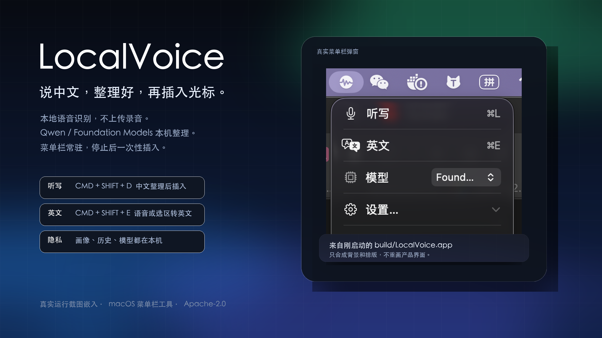
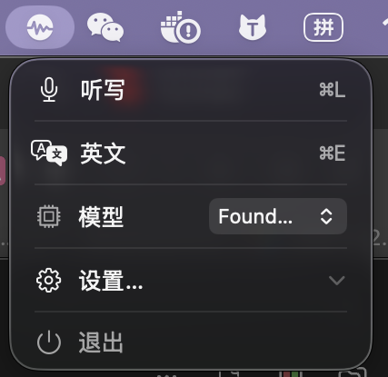

录音不上传
使用 Apple Speech 的本机识别能力。音频、转写文本和模型输出不发到开发者服务器。

本地语音识别
Qwen / Foundation Models
选区中译英
剪贴板兜底
目标应用不会出现半截转写。LocalVoice 只在悬浮条和菜单栏里显示状态，等你停止录音后再执行整段整理和一次性插入。

使用 Apple Speech 的本机识别能力。音频、转写文本和模型输出不发到开发者服务器。
Qwen3 4B 首次下载约 2.3 GB；下载后可离线运行。也可以切到 macOS Foundation Models。
画像、历史、模型缓存、邮件签名和快捷键设置都能从菜单栏清掉。
200 条中文邮件和普通听写样本，Apple M5，24 GB 内存，macOS 26.5.1。